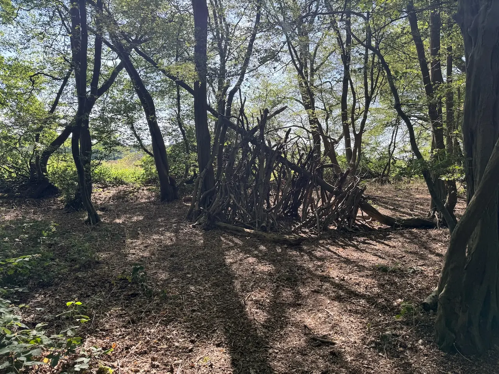
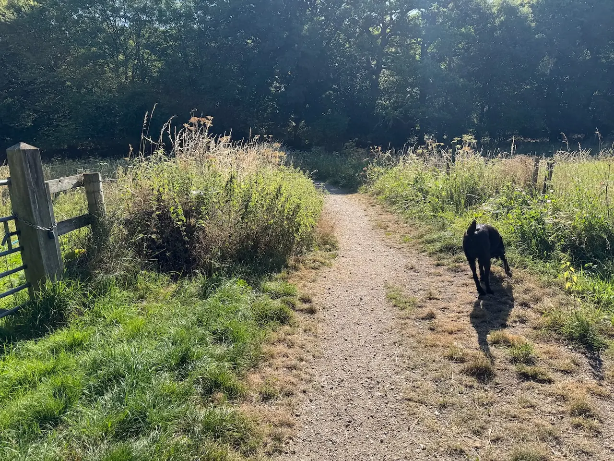
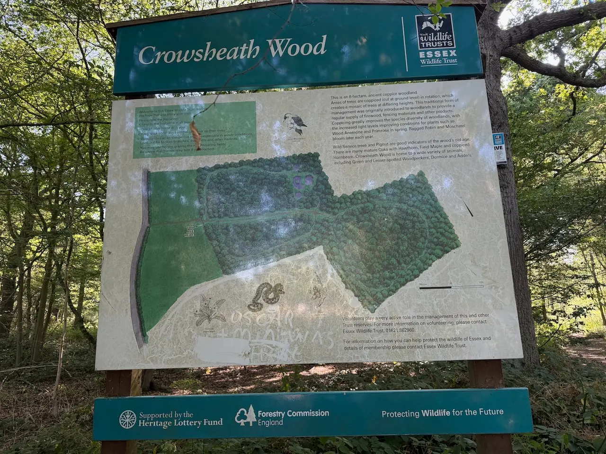
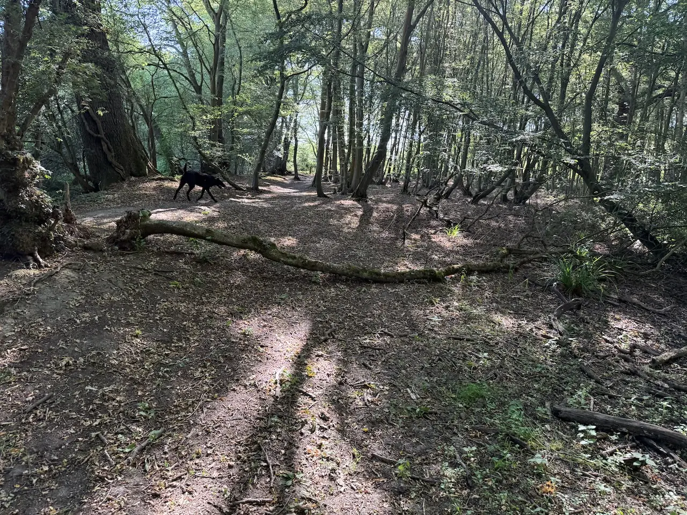
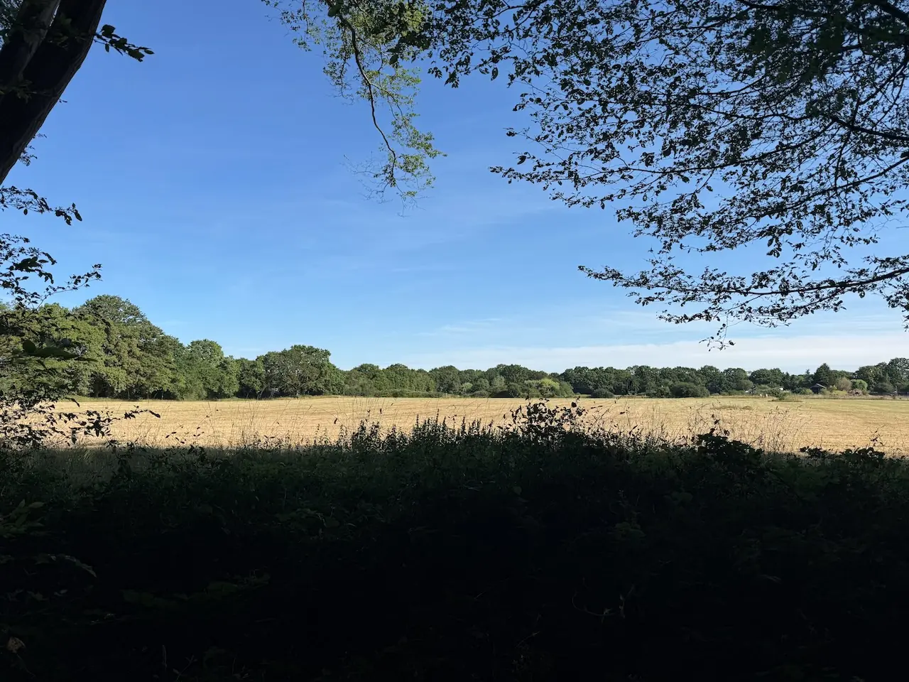
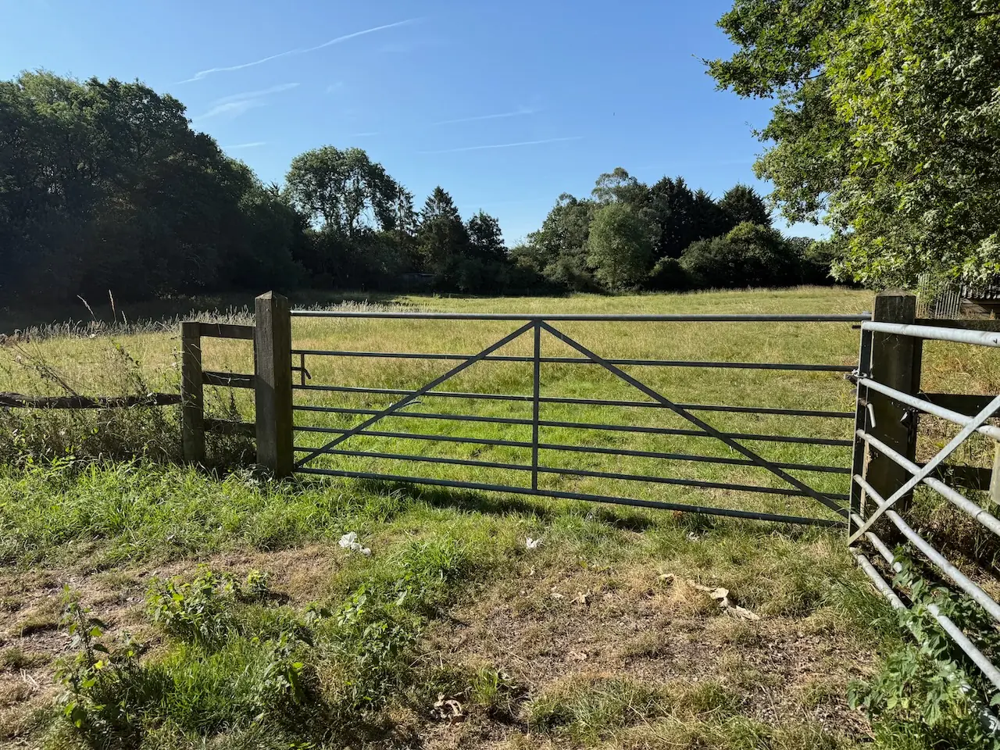
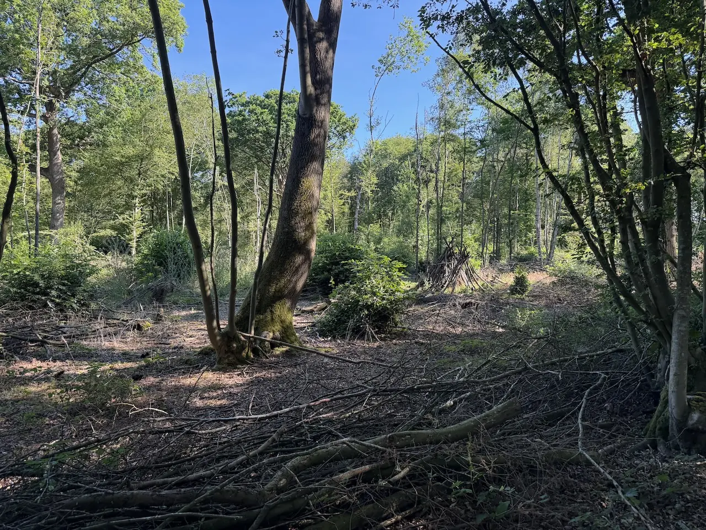
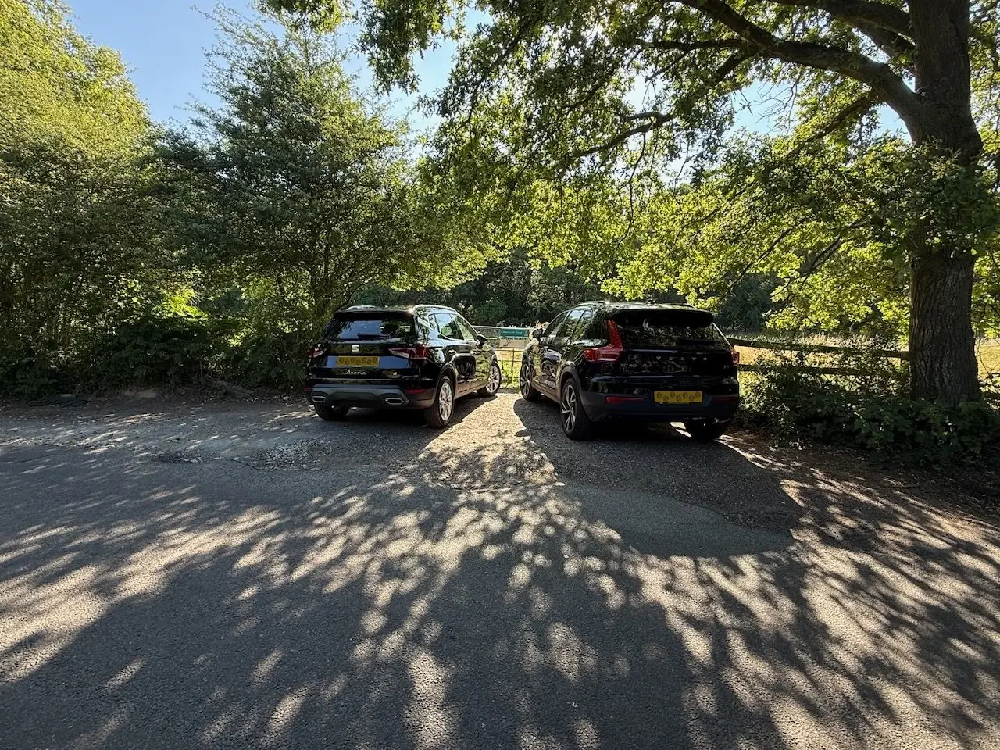

Circular
Crowsheath Wood Nature Reserve
Take a walk through this fantastic woodland that shows off one of Essex's best spring flower displays
At a glance
Honest ratings, so you can decide in seconds whether it suits your dog.
★★★★☆
How we rate this
- ★☆☆☆☆ Busy, narrow paths, dogs everywhere
- ★★☆☆☆ Often busy, few escape routes
- ★★★☆☆ Mixed, depends on time of day
- ★★★★☆ Generally quiet with space to move away
- ★★★★★ Excellent visibility and lots of space
★★★☆☆
How we rate this
- ★☆☆☆☆ Long, difficult, overwhelming
- ★★☆☆☆ Not ideal for young dogs
- ★★★☆☆ Fine with breaks
- ★★★★☆ Great starter walk
- ★★★★★ Perfect for puppies
★★★☆☆
How we rate this
- ★☆☆☆☆ Long and strenuous - tough for older dogs
- ★★☆☆☆ Some demanding stretches or rough ground
- ★★★☆☆ Doable at a gentle pace, with a few harder bits
- ★★★★☆ Mostly easy going with places to rest
- ★★★★★ Short, flat and gentle - perfect for seniors
★★☆☆☆
How we rate this
- ★☆☆☆☆ Impossible
- ★★☆☆☆ Some sections manageable
- ★★★☆☆ Mostly accessible
- ★★★★☆ Easy with care
- ★★★★★ Fully accessible
★☆☆☆☆
How we rate this
- ★☆☆☆☆ No water
- ★★☆☆☆ Water but difficult access
- ★★★☆☆ Small streams/seasonal water
- ★★★★☆ Good swimming spots
- ★★★★★ Destination for water-loving dogs
★★★★☆
How we rate this
- ★☆☆☆☆ Lead essential
- ★★☆☆☆ Very few opportunities
- ★★★☆☆ Some suitable areas
- ★★★★☆ Mostly suitable with recall
- ★★★★★ Excellent off-lead freedom
★★★★★
How we rate this
- ★☆☆☆☆ Completely exposed
- ★★☆☆☆ Limited shade
- ★★★☆☆ Some shaded stretches
- ★★★★☆ Mostly shaded
- ★★★★★ Woodland cover throughout
★★★☆☆
How we rate this
- ★☆☆☆☆ Bring a towel and spare clothes
- ★★☆☆☆ Expect muddy paws most of the year
- ★★★☆☆ Mud after rain
- ★★★★☆ Occasional puddles
- ★★★★★ Trainers stay clean
Photo gallery
See what it actually looks like before you go.









Walk Route
Getting there
Parking & directions. There is parking at Hanningfield Reservoir which is an easy walking distance, otherwise there is limited parking at the entrance of the track leading up to the reserve
Make a Day of It
Already heading to Downham? Here's what other local dog owners pair with this walk.
Cafés nearby (2)
Other nearby cafés
Pubs nearby (9)
Other nearby pubs
The Bakers Arms
2.5 mi • 7 mins
The Hoop
2.5 mi • 7 mins
The Shepherd & Dog
2.7 mi • 8 mins
White Hart Inn
3.8 mi • 11 mins
The Cricketers Mill Green
6.0 mi • 17 mins
The Cricketers Arms
6.1 mi • 18 mins
The Woodmans Arms
6.7 mi • 19 mins
The Horse & Groom
7.3 mi • 21 mins
The Lobster Smack
9.4 mi • 27 mins
Restaurants nearby (1)
Other nearby restaurants
Explore Nearby
Other dog-friendly walks within easy reach of Crowsheath Wood Nature Reserve.


Community tips
From local dog owners who've walked it.
★ This walk doesn't have any community tips yet.
Know something that would help another dog owner?
- Is there a quieter entrance?
- Does it get muddy after heavy rain?
- Where's the best place for a swim?
- Any livestock or seasonal hazards?
- Is there a hidden picnic spot?
Help keep this guide up to date
We'd love your help keeping Dogs of Essex accurate and up to date.
Official Information
Managed by Essex Wildlife Trust.
- Essex Wildlife Trust website →
- Check for seasonal updates, conservation notices and temporary closures.